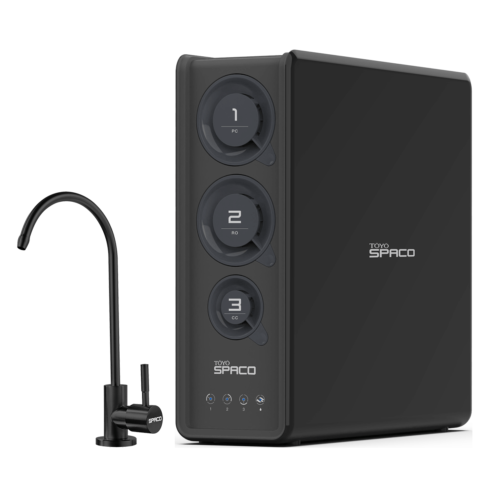
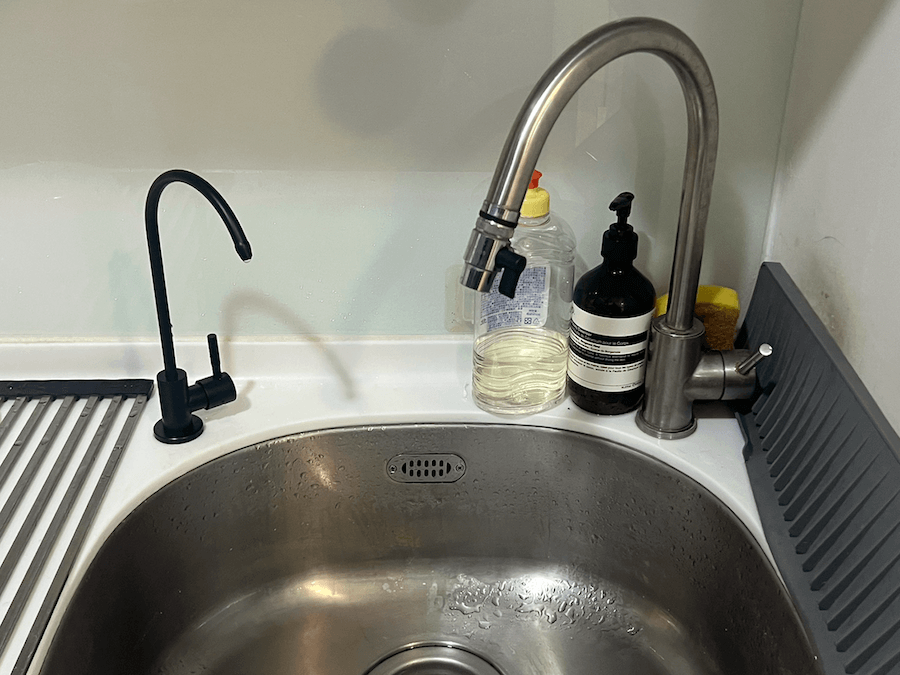
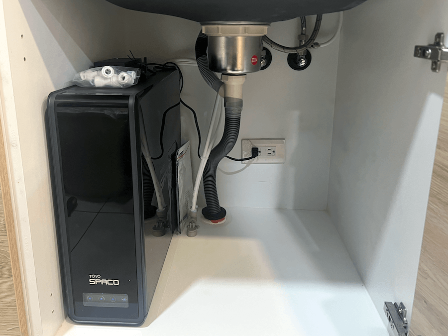

SPACO 櫥下型-RO直輸淨水器 R1 (800G)
商品內容
SPACO R1龍頭 X 1
SPACO R1主機 X 1
(內含3道濾心)
商品描述
SPACO 櫥下型-RO直輸淨水器 R1 (800G)
THE TASTE OF GALAXIES
極淨純水，時尚入廚，為你濾出生活的純粹
可選免費升級雙出龍頭！
・800G(加侖)高規格造水量濾心
・每分鐘出水2L/min
・新鮮直飲不必煮水
・霧黑時尚龍頭，符合LF無鉛標準
・廚下主機無桶直輸，不佔空間
・彈壓濾心，一鍵更換超省力
・智能主機濾心更換提醒顯示
・自動偵測機內漏水斷水設計
【3重濾心，極淨純飲】
【增添活性碳 優化口感】
【奈米級RO膜濾心】
0.1奈米(=0.0001微米) RO膜濾心
有效濾除99.9%水中有害物質
通過國家級24項飲用水檢測
【保養及維護】
建議使用2年以上，需回原廠進行保養維護。未使用靜置1周以上，使用前請先排放水10-15分鐘，若仍有狀況需回原廠進行保養維護，靜置一個月以上可另行預約客服0800-090-881到府服務管線檢查。
商品規格
| 品名 | SPACO 櫥下型 RO直輸淨水器 (800G) |
| 型號 | R1 |
| 商品內容 | 廚上龍頭/廚下主機(內含3道濾心) |
| 額定電壓頻率 | 96W / 2.5A |
| 功能模式 | 純水/淨水 |
| 製水流量 | 2L/min |
| 純水製水量 | 5000L |
| 第1道濾心 | R-800-1，複合式活性碳濾心PC，使用壽命6-12個月 |
| 第2道濾心 | R-800-2，RO膜濾心800G RO，使用壽命 12-24個月 |
| 第3道濾心 | R-800-3，椰殼活性碳濾心CC，使用壽命 6-12個月 |
| 適用水壓 | 1.5 ~ 2.5kg |
| 工作水壓 | 4 ~ 9kg |
| 適用水質 | 自來水 |
| 適用水溫 | 5 ~ 40*C |
| 主機尺寸 | W140 X D440 X H405 mm |
| 主機重量 | 未進水13kg |
| 製造地區 | 中國生產/台灣監製 |
安裝實例

